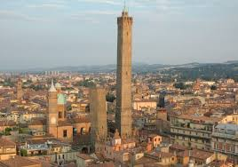
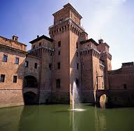
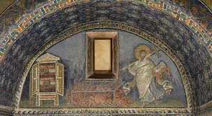
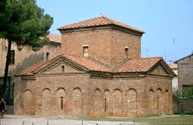

There are many historical landmarks in Emilia Romagna, and here are a few:
The Two Towers of Bologna are located in the heart of Bologna, and are a traditional symbol of the red city. They were once connected by a footbridge, but now stand separately. One, the Asinelli Tower, stands roughly 9.7m tall, and the other, the Garisenda Tower, is about 40m tall.

The Castello Estense is a castle, with a fully functional moat and drawbridge, built originally to protect Niolo` II Este in 1385. Some rooms in the castle are still being used, for government use, but there are still several rooms, including the royal suites, that are open to look at.

Mausoleo di Galla Placidia is an open museum that was originally built as a resting place for a Roman Emperors sister. Inside the building, the walls are decorated in colourful mosaics, and the floors made of marble. Though, the Emperors sister did not end up being buried there, and was buried in Rome, in the year 450.
